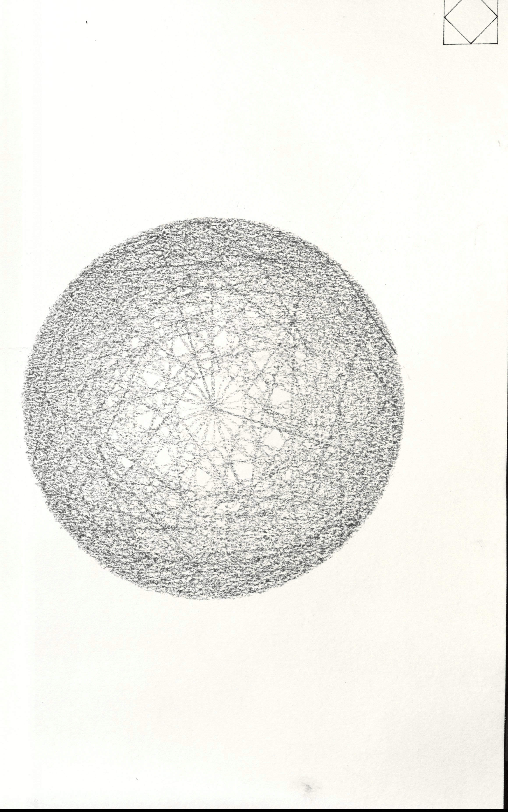
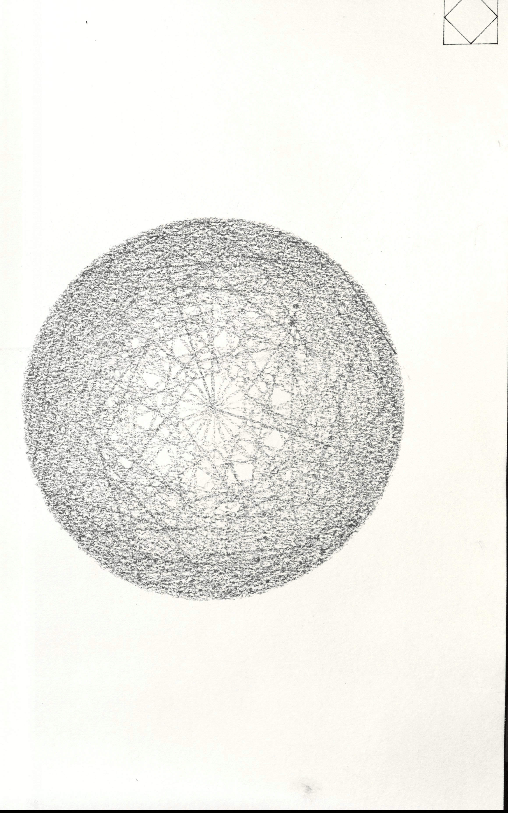
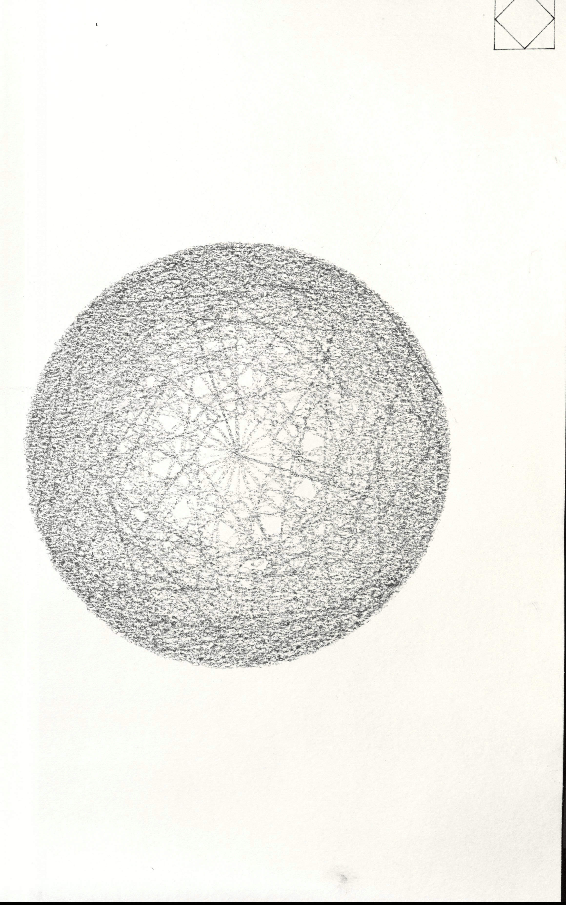
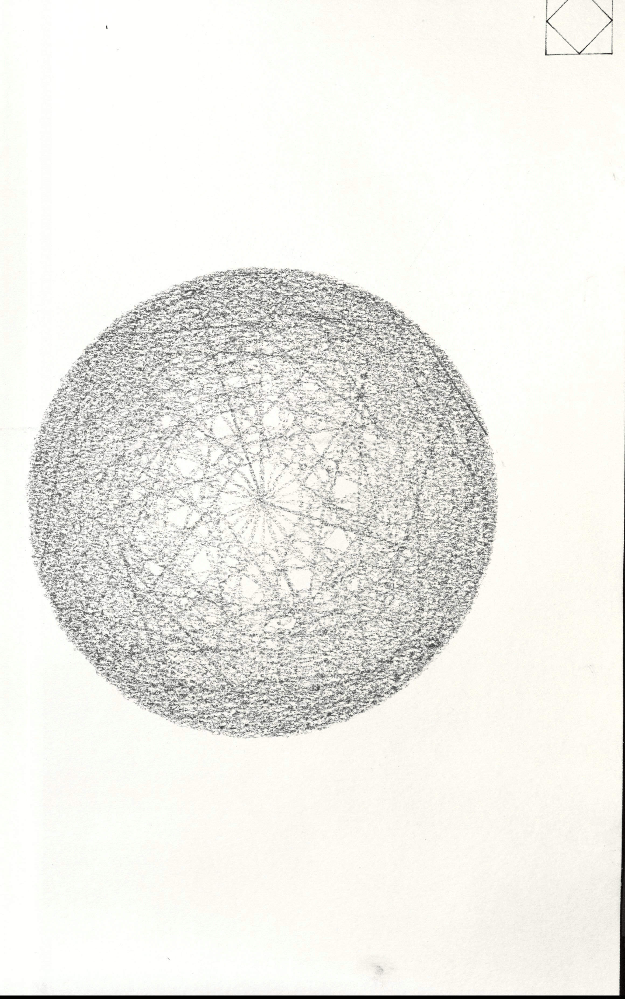

Serial Drift
I generated designs in Rhino and Grasshopper which were drawn by a pen plotter. I explored distorting the translation between the digital drawing and physical drawing by using dried out felt pens and charcoal.
 

 
